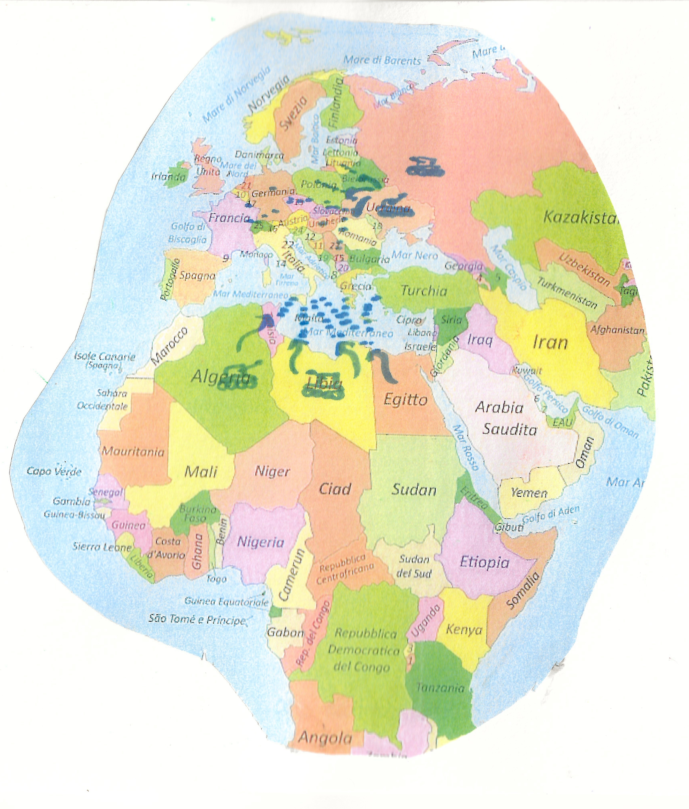
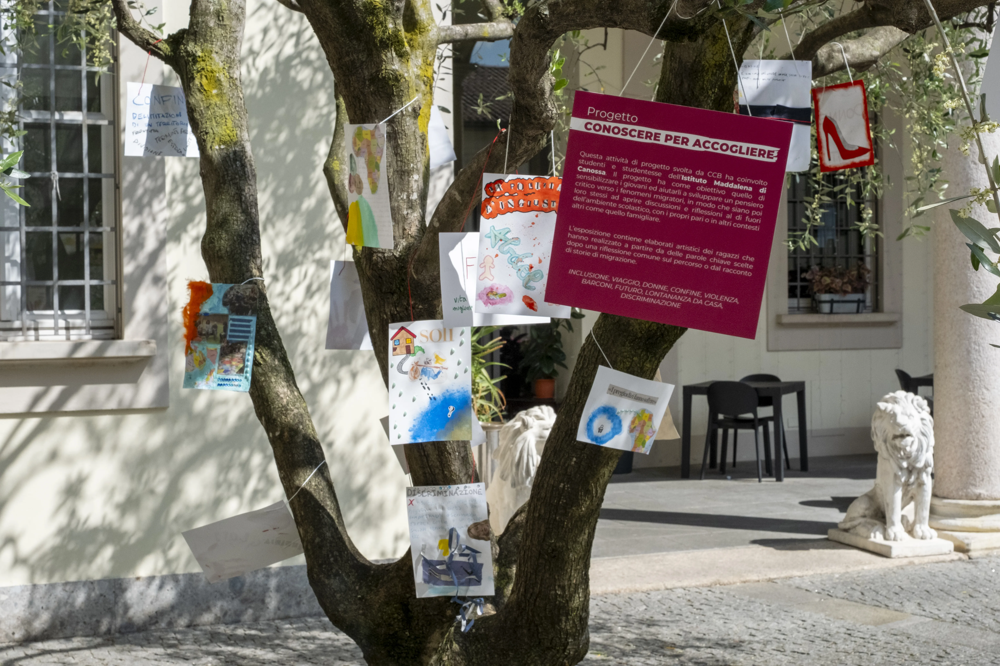
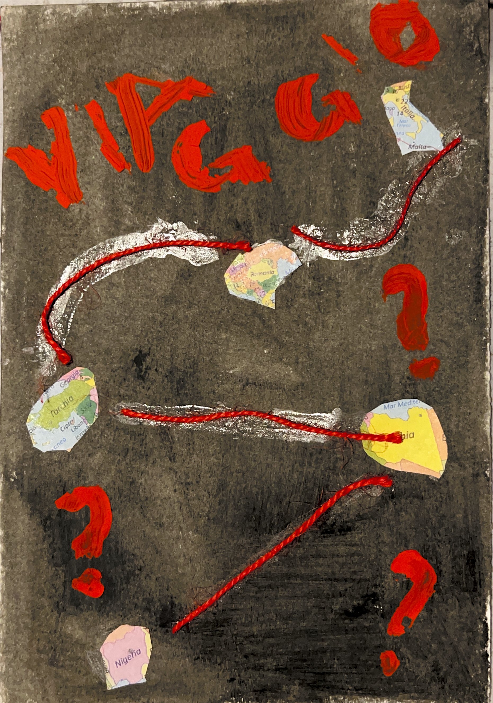

Il Consorzio Comunità Brianza (CCB) è un’impresa sociale attiva sul territorio di Monza e Brianza che progetta e realizza interventi educativi e di inclusione sociale, con una particolare attenzione ai Minori Stranieri Non Accompagnati. Attraverso percorsi di accoglienza, accompagnamento educativo e laboratori espressivi, CCB lavora per sostenere i giovani nel riconoscimento della propria identità, nella costruzione del futuro e nella relazione con la comunità di accoglienza.
Di seguito scopri i progetti realizzati nel 2025 dai ragazzi, all’interno di percorsi educativi e artistici promossi da CCB in collaborazione con scuole, educatori e realtà del territorio.
Un sogno nel CASsetto
Questo percorso è stato pensato per i Minori Stranieri Non Accompagnati accolti nel SAI di Monza e nel CAS di via XX Settembre, con l’obiettivo di creare uno spazio di confronto e arricchimento tra culture e paesi di provenienza (Gambia, Burkina Faso, Guinea Conakry, Tunisia, Camerun) e il paese di accoglienza (Italia).
L’obiettivo del percorso è riflettere su sé stessi e sulla propria storia nelle diverse fasi della vita, connettendola al presente e ai progetti futuri, attraverso attività ludico-ricreative e riflessive.
Grazie a questo percorso, i ragazzi hanno acquisito una maggiore consapevolezza delle proprie risorse personali e una più profonda capacità di riflessione sul proprio percorso migratorio, strumenti fondamentali per affrontare in autonomia la quotidianità e la socializzazione nel paese di accoglienza.
I – Chi sono? Mi presento
"Sei arrivato in un Paese straniero dove non conosci nessuno e nessuno ti conosce, tutti parlano un'altra lingua ed è un mondo nuovo... presentati e fatti conoscere attraverso la tua maschera"
Attraverso uno strumento non verbale e metaforico della maschera, i ragazzi si sono impegnati rappresentarsi e poi presentarsi, rimettendosi in contatto con la loro identità e appartenenza culturale e famigliare.
Grazie a questo percorso, i ragazzi hanno acquisito una maggiore consapevolezza delle proprie risorse personali e una più profonda capacità di riflessione sul proprio percorso migratorio, strumenti fondamentali per affrontare in autonomia la quotidianità e la socializzazione nel Paese di accoglienza.


II – Dove sono finito?
Nel secondo incontro i ragazzi sono chiamati a collocarsi fisicamente e geograficamente in Italia e nel mondo, portando dei ricordi del paese di origine e del loro arrivo in Italia e desideri sul futuro.

B: "Del Gambia ricordo gli alberi di mango e il pozzo dove andavamo a prendere l'acqua. Quando sono arrivato in Italia mi sono stupito perché c'erano tante macchine per strada. Nel futuro vorrei realizzare il mio sogno di giocare a calcio".
F: "Il mio ricordo della Tunisia sono gli alberi di ulivo e di frutta. Poi ricordo il viaggio in mare verso l'Italia. Io sono arrivato, ma l'altra barca vicino a noi è affondata. Dopo l'arrivo a Lampedusa, mi hanno mandato in un centro di accoglienza a Catania".
III – Mi metto in gioco
Nel terzo incontro il gruppo ha avviato una riflessione a partire dallo stato d'animo dello spaesamento e della confusione connessi alla migrazione affrontata da soli e da molto giovani e all'approccio con una nuova cultura e un nuovo mondo. Le carte Dixit vengono utilizzate allo scopo di facilitare la narrazione di vissuti ad un livello più profondo, che vada oltre le parole e possa far emergere parti più inconsce e inconsapevoli.


Conoscere per accogliere

Questa attività progettuale, realizzata da CCB, ha coinvolto studentesse e studenti dell’Istituto Maddalena di Canossa. Il progetto si propone di sensibilizzare i giovani e di accompagnarli nello sviluppo di un pensiero critico sui fenomeni migratori, affinché possano diventare promotori di discussioni e riflessioni anche al di fuori dell’ambiente scolastico, confrontandosi con i propri pari e in altri contesti, come quello familiare.
L’esposizione raccoglie elaborati artistici realizzati dai ragazzi a partire da parole chiave emerse da una riflessione condivisa sul percorso, oppure dal racconto di storie di migrazione.
Parole chiave:
Inclusione · Viaggio · Donne · Confine · Violenza · Barconi · Futuro · Lontananza da casa · Discriminazione

